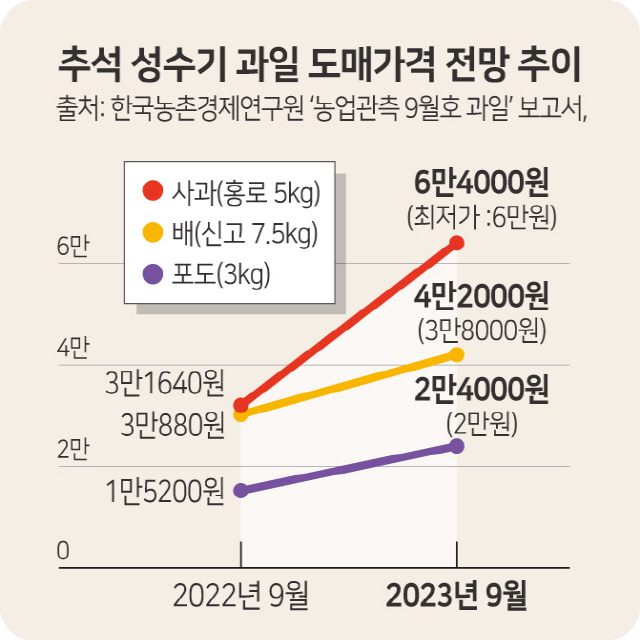

추석 차례상 비용이 전년 보다 하락할 것으로 전망되는 가운데 명절선물 가격 상승 등 지속되는 고물가에 강원지역의 추석 장바구니 물가부담은 여전히 큰 것으로 나타났다.
12일 한국농수산식품유통공사가 지난 6일 전국 16개 전통시장(춘천중앙시장 포함)과 34개 대형유통업체(강릉지역 대형마트 1곳 포함)를 대상으로 추석 성수품 28개 품목의 가격을 조사한 결과 올해 추석 차례상을
차리는데 평균 30만3002원이 들 것으로 나타났다. 지난해 보다 4.9% 저렴해졌다.
출처 : 강원도민일보